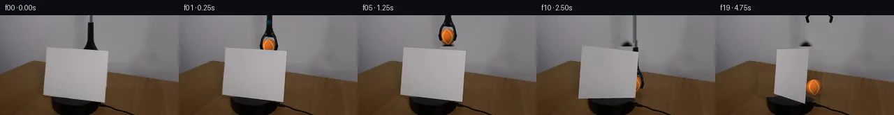

![首帧]()

Round 00
2026-11-04T19:30:57.348499+00:00像素候选变化代码 +272/−0inspection 更新
pixels fbafc9d11d67047a · code f747ca878b38ed6c
查看本轮 generate.py 真实 diff
--- previous/generate.py
+++ current/generate.py
@@ -0,0 +1,272 @@
+"""Local pixel continuation. No model, network, renderer, or later-image viewing."""
+from pathlib import Path
+import json
+import math
+import numpy as np
+import cv2
+from PIL import Image, ImageDraw, ImageFilter
+from scipy.ndimage import gaussian_filter
+from artifact_io import save
+
+ROOT = Path(__file__).resolve().parent
+TMP = ROOT / '.tmp'
+TMP.mkdir(exist_ok=True)
+W, H, S = 256, 144, 4
+SOURCE = np.asarray(Image.open(ROOT / 'first_frame.png').convert('RGB'))
+QUAD = np.float32([[66.7, 46.4], [154.7, 51.3], [149.5, 125.3], [61.9, 114.5]])
+UV_QUAD = np.float32([[-1, -1], [1, -1], [1, 1], [-1, 1]])
+H0 = cv2.getPerspectiveTransform(UV_QUAD, QUAD)
+K = np.array([[360., 0, 128], [0, 360., 72], [0, 0, 1.]])
+basis = np.linalg.inv(K) @ H0
+normal = np.cross(basis[:, 0], basis[:, 1])
+normal *= np.linalg.norm(basis[:, 0]) / np.linalg.norm(normal)
+HN = K @ normal
+YY, XX = np.mgrid[:H, :W]
+
+
+def smooth(a):
+ a = np.clip(a, 0, 1)
+ return a*a*(3-2*a)
+
+
+def polygon_mask(points, scale=1):
+ im = Image.new('L', (W*scale, H*scale))
+ ImageDraw.Draw(im).polygon([tuple(p*scale) for p in points], fill=255)
+ return np.asarray(im, dtype=np.float32) / 255
+
+
+CARD_MASK_HI = polygon_mask(QUAD, S)
+CARD_MASK = cv2.resize(CARD_MASK_HI, (W, H), interpolation=cv2.INTER_AREA)
+# Cover source antialias fringes, but keep the platform/cord outside the old paper.
+card_remove = cv2.dilate((CARD_MASK > .01).astype(np.uint8), np.ones((3, 3), np.uint8))
+stem_remove = np.zeros((H, W), np.uint8)
+cv2.fillPoly(stem_remove, [np.int32([[124, 0], [135, 0], [135, 32], [143, 51], [116, 51], [124, 31]])], 1)
+remove = np.maximum(card_remove, stem_remove)
+EDGE = 65 + .164 * (XX-49)
+wall = YY < EDGE-1
+known_wall = wall & (remove == 0) & (XX > 35) & (XX < 224)
+# Polynomial illumination interpolation uses only visible source wall pixels.
+xn, yn = (XX-128)/100., (YY-48)/70.
+terms = [(i, j) for i in range(5) for j in range(5-i)]
+A = np.stack([xn**i * yn**j for i, j in terms], -1)
+coef = np.linalg.lstsq(A[known_wall], SOURCE[known_wall].astype(float), rcond=None)[0]
+wall_rgb = A @ coef
+rng = np.random.default_rng(6006)
+noise = gaussian_filter(rng.normal(size=(H, W)), .45)
+wall_rgb += noise[..., None]*.4
+# Donor wood is nearby exposed wood on the same table; match distance from back edge.
+src_x = 163 + (XX-62)*.82
+src_edge = 65 + .164*(src_x-49)
+src_y = src_edge + np.maximum(YY-EDGE, 0)*.72 + 1.4
+wood = cv2.remap(SOURCE, src_x.astype(np.float32), src_y.astype(np.float32), cv2.INTER_CUBIC, borderMode=cv2.BORDER_REFLECT_101).astype(float)
+wood *= np.array([.97, .98, .99])[None, None, :]
+wall_alpha = np.clip((EDGE-YY+.2)/1.3, 0, 1)[..., None]
+reconstructed = wall_rgb*wall_alpha + wood*(1-wall_alpha)
+# Reconstruct the small hidden top of the existing round black platform.
+rho = ((XX-108)/35)**2 + ((YY-122)/8.1)**2
+platform_alpha = np.clip((1-rho)*4, 0, 1)
+platform_rgb = np.zeros((H, W, 3), float)
+platform_rgb[:] = [27, 26, 26]
+platform_rgb += (4*np.exp(-((XX-97)/25)**2) - 4*np.maximum((YY-122)/8, 0))[..., None]
+reconstructed = reconstructed*(1-platform_alpha[..., None]) + platform_rgb*platform_alpha[..., None]
+# Source remains exactly fixed outside the card and old grabber footprints.
+background = SOURCE.astype(float).copy()
+background[remove > 0] = reconstructed[remove > 0]
+# Small rod footprint benefits from local wall inpainting for the original shaft's shadow.
+rod_wall = stem_remove * (YY < 45).astype(np.uint8)
+rod_clean = cv2.inpaint(SOURCE, rod_wall*255, 5, cv2.INPAINT_TELEA)
+background[rod_wall > 0] = rod_clean[rod_wall > 0]
+background = np.clip(background, 0, 255).astype(np.uint8)
+BG_HI = np.asarray(Image.fromarray(background).resize((W*S, H*S), Image.Resampling.BICUBIC)).astype(float)
+SOURCE_HI = np.asarray(Image.fromarray(SOURCE).resize((W*S, H*S), Image.Resampling.BICUBIC)).astype(float)
+
+# Segmented original shaft and flared black head; preserve its photographic texture.
+tool_mask = np.zeros((H, W), np.float32)
+for y in range(51):
+ for x in range(117, 142):
+ # Dark stem silhouette plus the gray metal shaft at the upper image border.
… diff truncated; 185 more lines …